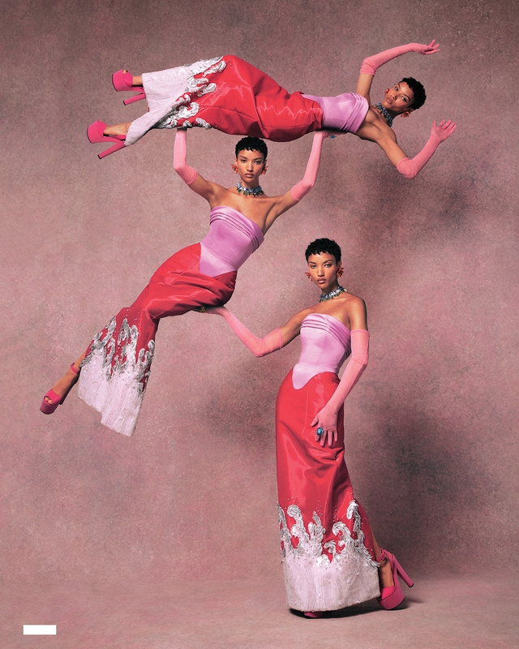
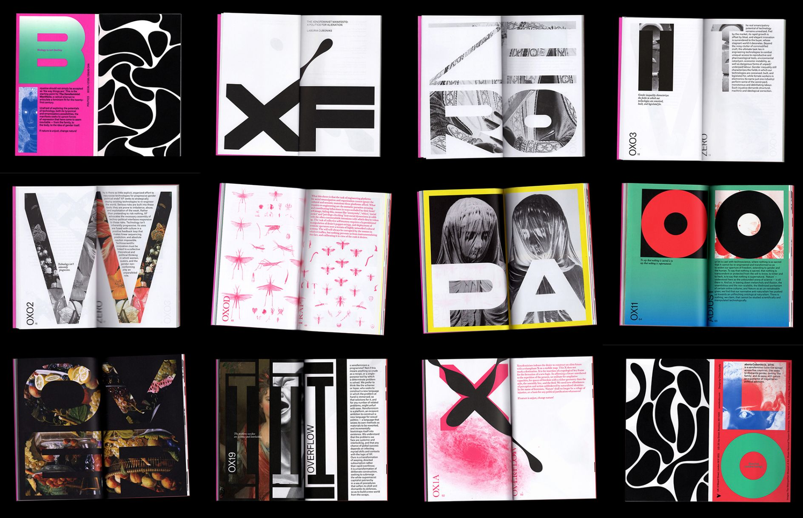

Welcome to The Curated Artbook of Aalilyah Wilson. This collection explores the intersection of digital design, fine art, architectural aesthetics, and contemporary fashion editorial layouts. This artbook organizes disparate creative movements into a unified visual experience, showing how digital spaces can act as powerful mediums for sensory storytelling.
The visual concepts displayed throughout this showcase feature distinct creative approaches from bold typography expressions to structured architectural compositions. Every asset has been intentionally selected to show progression in digital layout design, visual pacing, and responsive balance.

